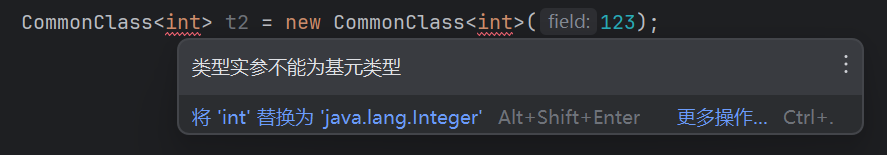

Java学习笔记（六）：泛型
声明：本篇笔记部分摘自《Java核心技术（卷Ⅰ） - 机械工业出版社》及Java教程-廖雪峰-2025-06-16，遵循CC BY 4.0协议。
存在由AI生成的小部分内容，仅供参考，请仔细甄别可能存在的错误。
一、引入
考虑这样一个需求：实现一个方法，原封不动地返回输入的参数，实现类似于echo的效果。
有同学说，这还不简单：
1 | |
这么看似乎没得问题，JVM也运行出了正确的结果，但是我们似乎忽略了一些问题：
1 | |
预期会得到1 + 1 = 2的输出，但理想很美满，现实却是输出了java: 不兼容的类型: int无法转换为java.lang.String。原因在与我们定义方法时固定了参数和返回值的类型均为String，而上例中echo(1+1)传入的参数类型不对，因此触发了异常。
又有同学说了，使用方法重载啊，再定义一个int echo(int i) {}不就行了吗？但是我们还有double、float、boolean这些数据类型呢，更极端地说，如果输入的是一个类的实例呢？
显然我们无法预测程序运行时，会传入哪些类型的数据。为每一种数据类型都重载一个方法显然是不理智的选择（上班摸鱼当我没说，前提是写出这样的代码不会被追着骂🤔），但是如果不写全又会找不到合适的方法来执行，会报告类型错误。那我们能否将类型也看作是一种不定的“变量”，随着参数一同传入方法中，然后这个方法再根据参数的类型决定返回什么类型的数据呢？
恭喜我们探索出了一个很有用的工具——泛型（Generics）：
1 | |
字如其名，泛型即广泛的类型，我们可以通过泛型来将参数的类型作为参数的一部分传入方法中，方法内根据类型来进行相应的处理，现在再调用System.out.printf( "%s + %s = %s", echo("1"), echo("1"), echo(1+1) )，就可以顺利输出1 + 1 = 2了。
（顺带一提，这个例子在我读一位大佬撰写的TypeScript入门教程时让我非常顺利地理解了泛型的定义和作用，对我的启发很大，在我的Ts笔记中也有使用。这里也分享出来作为一个初识概念的引子，希望大家以后遇到类似的需求时能够想起泛型；毕竟重要的不是看懂而是会用。）
二、泛型类
上面我们已经演示了泛型方法的实现，我们来实现一下泛型类：
1 | |
给CommonClass的构造方法传入不同类型的参数，都很好地实现了初始化与字段的读取，这就是泛型的优点：在保持编译时类型安全的同时，获得了代码的极大复用性。
三、擦拭法
Java语言的泛型实现方式是擦拭法（Type Erasure）。也就是说，JVM其实并不知道有泛型的存在，编译阶段会由编译器将泛型转换成实际的类型。
1.擦拭法导致的局限
Java的泛型是由编译器在编译时实行的，编译器内部永远把所有类型T视为Object处理，但是，在需要转型的时候，编译器会根据T的类型自动为我们实行安全地强制转型。这样会使得Jabalpur中的泛型存在这些局限：
① 局限一：泛型不能是基本类型
<T>不能是基本类型，例如int、double，因为Object类型无法持有这些基本类型。

② 无法取得带泛型的Class。
因为T是Object，我们对Pair<String>和Pair<Integer>类型获取Class时，获取到的是同一个Class，也就是Pair类的Class。
换句话说，所有泛型实例，无论T的类型是什么，getClass()返回同一个Class实例，因为编译后它们全部都是Pair<Object>。
③ 无法判断带泛型的类型
1 | |
原因和前面一样，并不存在Pair<String>.class，而是只有唯一的Pair.class，即我们无法通过反射得知泛型类的准确成员类型。
④ 不能实例化T类型
1 | |
上述代码无法通过编译，因为构造方法的两行语句：
1 | |
擦拭后实际上变成了：
1 | |
这样一来，创建new Pair<String>()和创建new Pair<Integer>()就全部成了Object，显然编译器要阻止这种类型不对的代码。
要实例化T类型，我们必须借助额外的Class<T>参数：
1 | |
上述代码借助Class<T>参数并通过反射来实例化T类型，使用的时候，也必须传入Class<T>。例如：
1 | |
因为传入了Class<String>的实例，所以我们借助String.class就可以实例化String类型。
2.泛型方法的覆写
1 | |
对wquals()方法进行这样的覆写，会无法通过编译。原因是这样的定义会被擦拭成equals(Object t)，这个方法也是继承自Object，这样就会与父类方法的签名相同，就导致了子类的泛型方法无意中覆写了父类的非泛型方法，会被编译器阻止。
要解决这个问题，只需修改方法名，不要使得出现覆写的情况即可：
1 | |
四、extends通配符
1 | |
这样看似乎没问题，先是定义了一个Dog类型的可变数组，然后将其赋值给Anumal类型的可变数组；但是编译器会在第二行报告java: 不兼容的类型: java.util.List<Dog>无法转换为java.util.List<Animal>的错误。
泛型是不变（Invariant）的。这意味着即使 Dog 是 Animal 的子类，List<Dog> 也不是 List<Animal> 的子类，因此无法实现预期的“向上转型”操作。
考虑使用extends通配符：<? extends T> 表示“未知的某种类型，但它必须是 T 或其子类型”。它让你能够安全地从泛型对象中读取（get），但不能安全地向其中写入（set）（除了null）。下面是一个例子：
1 | |
需要注意的是，extends 通配符并不解决“将一个列表赋值给另一个不同类型的引用”的问题，而是解决编写一个方法，该方法能接受多种泛型类型的参数的问题。其次是，这样只能获取类列表中的元素，无法进行写入操作，相当于是只读的。
五、super通配符
类似地，虽然Integer是Number的子类，但是Pair<Integer>不是Pair<Number>的子类。
1 | |
在上面的方法中，传入Pair<Number>是不允许的。我们希望能够接受传入Pair<Integer>类型，以及Pair<Number>、Pair<Object>，因为Number和Object是Integer的父类，setFirst(Number)和setFirst(Object)实际上允许接受Integer类型。
这时需要使用super方法：
1 | |
注意到Pair<? super Integer>表示，方法参数接受所有泛型类型为Integer或Integer父类的Pair类型。
对比extends和super通配符
我们再回顾一下extends通配符。作为方法参数，<? extends T>类型和<? super T>类型的区别在于：
<? extends T>允许调用读方法T get()获取T的引用，但不允许调用写方法set(T)传入T的引用（传入null除外）；<? super T>允许调用写方法set(T)传入T的引用，但不允许调用读方法T get()获取T的引用（获取Object除外）。
一个是允许读不允许写，另一个是允许写不允许读。
PECS原则：何时使用哪一中通配符？
为了便于记忆，我们可以用PECS原则：Producer Extends Consumer Super。即：
- 如果需要返回
T，它是生产者（Producer），要使用extends通配符； - 如果需要写入
T，它是消费者（Consumer），要使用super通配符。
无限定通配符
我们已经讨论了<? extends T>和<? super T>作为方法参数的作用。实际上，Java的泛型还允许使用无限定通配符（Unbounded Wildcard Type），即只定义一个?：
1 | |
因为<?>通配符既没有extends，也没有super，因此：
- 不允许调用
set(T)方法并传入引用（null除外）； - 不允许调用
T get()方法并获取T引用（只能获取Object引用）。
换句话说，既不能读，也不能写，那只能做一些null的判断。
参考资料
- 廖雪峰的官方网站.Java教程[EB/OL].(2025-06-07)[2025-08-21]. https://www.cnblogs.com/echolun/p/12709761.html ↩